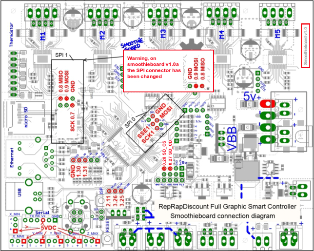
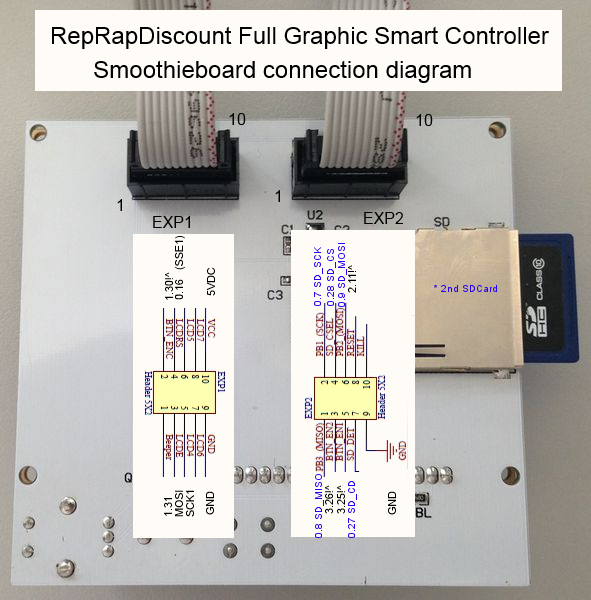
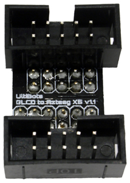
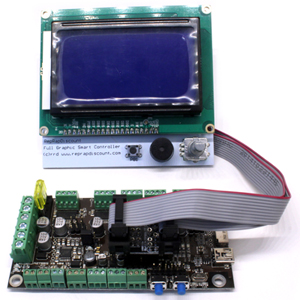

Supported Panels
The following panels are currently supported by Smoothie :
- ReprapDiscount GLCD
- Universal Panel Adapter
- Viki2 and Miniviki2, from panucatt
Supported SPI chips:- ST7565 and ST7920
Using non-SPI panels
I2C and parallel panels are not supported directly, however using a cheap Arduino Mini Pro, Uno or Nano
you can use the following I2C panels or a regular Reprap style Parallel style LCD using the universal panel adapter https://github.com/wolfmanjm/universal-panel-adapter and the universal_adapter driver :
- old Viki lcd - I2C
- Most reprap style parallel LCD - Parallel
- Panelolu2 probably works but not tested - I2C
Configuration
All configuration options
Here are all the configuration options available for the Panel module :
| Option | Example value | Explanation |
|---|
| panel.enable | false | Set to true to enable the panel interface. Panels are a screen, an encoder wheel and/or a set of buttons, used to control your machine. |
| panel.lcd | reprap_discount_glcd | Type of panel we are connecting. Each panel has a specific interface so we need to specify which panel we will be connecting. The currently supported panel types are reprap_discount_glcd, st7565_glcd, viki2, mini_viki2 and universal_adapter. |
| panel.spi_channel | 0 | SPI channel to use |
| panel.spi_cs_pin | 0.16 | CS ( Chip Select ) pin to use, this can be used to have several different devices on the same SPI port, as long as each device has a separate CS pin. Note that the RRD GLCD panel does not support this and requires being alone on it's port. |
| panel.spi_frequency | 500000 | SPI port frequency |
| panel.contrast | 9 | Contrast value for panels that support it ( viki2, mini_viki2 and st7565_glcd ) |
| panel.reverse | false | If set to true, reverse the screen. |
| panel.busy_pin | nc | If using the universal_adapter, this pin can be connected to the adapter to ask it if it is busy or not. |
| panel.encoder_a_pin | 3.25!^ | A pin for the encoder wheel. Encoders have two pins : A and B. Set to nc if you use no encoder. |
| panel.encoder_b_pin | 3.26!^ | B pin for the encoder wheel. Encoders have two pins : A and B. Set to nc if you use no encoder. |
| panel.encoder_resolution | 2 | the number of pulses the encoder emits per detent/click |
| panel.click_button_pin | 1.30!^ | Pin for the click ( "enter" ) button |
| panel.buzz_pin | 1.31 | Pin for the buzzer |
| panel.back_button_pin | 2.11!^ | Pin for the back button |
| panel.up_button_pin | 0.1! | Pin for the up button |
| panel.down_button_pin | 0.0! | Pin for the down button |
| panel.menu_offset | 0 | On some panels, this value must be set to 1. This is a number of lines to offset the menu lines by on screen. |
| panel.alpha_jog_feedrate | 6000 | X jogging feedrate in millimetres/minute. This is used when jogging using the panel screen. |
| panel.beta_jog_feedrate | 6000 | Y jogging feedrate in millimetres/minute. This is used when jogging using the panel screen. |
| panel.gamma_jog_feedrate | 200 | Z jogging feedrate in millimetres/minute. This is used when jogging using the panel screen. |
| panel.hotend_temperature | 185 | Temperature to set the hotend to when using the pre-heating menu item |
| panel.bed_temperature | 60 | Temperature to set the bed to when using the pre-heating menu item |
| panel.external_sd | true | Set to true if your panel has an external SD card slot, or if you want to connect a second SD card slot to one of your Smothieboard's SPI ports |
| panel.external_sd.spi_channel | 0 | Set the SPI channel the external SD card is on |
| panel.external_sd.spi_cs_pin | 2.8 | Set the CS ( Chip Select ) pin for the external SD card, this allows you to use multiple devices on the same SPI port, as long as they each have a CS pin |
| panel.external_sd.sdcd_pin | 2.13!^ | SD card detect signal pin, set to nc if you don't use a SD card detect signal |
| custom_menu.menu_name.enable | true | When set to true, create a new custom menu entry for the panel with the name menu_name. You can create any number of custom entries as long as they have different names. |
| custom_menu.menu_name.name | Power_on | The name that will be displayed in the panel's menus |
| custom_menu.menu_name.command | M80_S30|G1_X10 | The command that will be executed when the menu entry is selected and clicked. Note that the _ character gets converted to space in the menu and commands ( and must be used instead of the space character ) , and the | character is used to separate multiple commands |
Custom menu entries
Menu entries can be added from the config file for simple commands, for instance the following adds a Power on and Power off menu entry.
Note that _ will be converted to a space when displayed in the Menu. Commands can be seperated with a |. If you want to add a menu entry that probes your z-axis you will have to use a command like G30 Z0 followed by a G0 Z10. For this you need a custom menu entry "custom_menu.zprobe.command G30Z0|G0Z10". This moves the z-axis down untill it hits the probe, sets Z to 0 and moves 10 back up.
custom_menu.power_on.enable true #
custom_menu.power_on.name Power_on #
custom_menu.power_on.command M80 #
custom_menu.power_off.enable true #
custom_menu.power_off.name Power_off #
custom_menu.power_off.command M81 #
External SD card setup
WARNING using the external sdcard for printing from is not recommended at present. running SPI over long (or even short) cables is problematic, and can cause random hangs and/or corrupted data. I am not aware of a way to fix this other than using differential buffer drivers.
For the RRD GLCD it CANNOT share the same SPI as the LCD so it must be hooked up to the onboard sdcard SPI and use a spare pin for the sdcs.
Also note that an external SDcard sharing the SPI port with the onboard/internal sdcard must be ejected before rebooting as the bootloader does not like the external card. NOTE Smoothie will not boot if the external sdcard is inserted in the RRD LCD sdcard slot at boot time, it must be inserted after it has booted.
If the lcd panel has an sdcard reader it can be enabled with the following config:-
# setup for external sd card on the viki2 which shares the lcd spi port with the sdcard
panel.external_sd true # set to true if there is an extrernal sdcard on the panel
panel.external_sd.spi_channel 0 # set spi channel the sdcard is on
panel.external_sd.spi_cs_pin 0.27 # set spi chip select for the sdcard
panel.external_sd.sdcd_pin 0.28!^ # sd detect signal (set to nc if no sdcard detect)
# setup for external sd card on the RRD GLCD which shares the onboard sdcard SPI port
panel.external_sd true # set to true if there is an extrernal sdcard on the panel
panel.external_sd.spi_channel 1 # set spi channel the sdcard is on
panel.external_sd.spi_cs_pin 0.27 # set spi chip select for the sdcard (or any spare pin)
panel.external_sd.sdcd_pin 0.28!^ # sd detect signal (set to nc if no sdcard detect) (or any spare pin)
Using the spare button as a Kill switch
The button on the glcd and VIki2 can be wired as a Kill button by following This guide. In that case the
panel.back_button_pin should be commented out.
Reprap Discount GLCD
Power from the 5v line directly, from the 5v uart pin with a decoupling capacitor of at least 0.1uF, from a + pin on an unused endstop, or an external 5V power supply capable of delivering at least 500 mA.
More power
If you are using the onboard 5V regulator to step down from 12/24V, check the current draw required for your panel - depending on the color/backlight on your GLCD, it may require >250 mA for the backlight.
The normal recommended 5V regulator will not supply enough current for those panels - if the panel powers up, it will have very low contrast.
Use Recom part R-78E5.0-1.0 instead - it will supply 1 amp (vs 0.5 amps for the normally recommended regulator).
It is available at Digikey, and likely at other major electronics component sites.
See Voltage Regulator.
Adapter
There is an adapter board to easily connect a ReprapDiscount GLCD to a Smoothieboard with flat cable, howver note this is entirely optional.
You can find information about it at the RRDGLCDAdapter page.
It's sources are available on github.
SPI thermocouples
Because the RRD GLCD does not implement SPI correctly, it has to be alone on it's SPI port. This means you won't be able to use SPI thermocouples and the RRD GLCD together on the same board, unfortunately
Manual wiring
On the back of the GLCD EXP1 is to left and EXP2 is to right, pin 1 is bottom left, pin 2 is top left etc.
+5v is EXP1 pin 10, Gnd is EXP1 pin 9
# config settings
panel.enable true # set to true to enable the panel code
panel.lcd reprap_discount_glcd # set type of panel
panel.spi_channel 0 # spi channel to use ; GLCD EXP1 Pins 3,5 (MOSI, SCLK)
panel.spi_cs_pin 0.16 # spi chip select ; GLCD EXP1 Pin 4
panel.encoder_a_pin 3.25!^ # encoder pin ; GLCD EXP2 Pin 3
panel.encoder_b_pin 3.26!^ # encoder pin ; GLCD EXP2 Pin 5
panel.click_button_pin 1.30!^ # click button ; GLCD EXP1 Pin 2
panel.buzz_pin 1.31 # pin for buzzer ; GLCD EXP1 Pin 1
panel.back_button_pin 2.11!^ # 2.11 menu back ; GLCD EXP2 Pin 8
# setup for external sd card on the GLCD which uses the onboard sdcard SPI port
panel.external_sd true # set to true if there is an extrernal sdcard on the panel
panel.external_sd.spi_channel 1 # set spi channel the sdcard is on
panel.external_sd.spi_cs_pin 0.28 # set spi chip select for the sdcard (or any spare pin)
panel.external_sd.sdcd_pin 0.27!^ # sd detect signal (set to nc if no sdcard detect) (or any spare pin)

Pin numbering
5vdc availability presumes a 5vdc source (power from SBUS, 5V input, or optionally installed 5v converter VBB).
Be aware that RRD does not follow proper conventions for pin numbering. The pin 1 indicator on the ribbon is actually pin 10 in the RRD schematic. The image above is numbered according to the RRD inset schematics.
RRD GLCD to Azteeg X5 Mini v1.1 interface board
This interface board is simple to install, eliminates custom cables, frustration, and wire mess.
It is compatible with Azteeg X5 Mini v1.1 motion controller and is available from www.UltiBots.com. Source files are on our GitHub.
Azteeg X5 Mini to RRD GLCD wiring harness
This wiring harness uses three 2x10, one 1x2 .100" crimp housings and one heat shrinked female pin to connect the RRD GLCD to an Azteeg X5 Mini.
Note: This information is compatible with Azteeg X5 Mini v1.0 motion controllers.
Viki2 from panacutt.com
Viki2 wires to an Azteeg X5 mini with a flat cable as it has 1:1 pin mapping. The ConfigSample for the Azteeg mini has the config settings required, just uncomment them,
The config for Azteeg X5 is different to smoothieboard and is shown in the file https://github.com/Smoothieware/Smoothieware/blob/2f88d440ee3f79cb5202d242967b555fa35c7423/ConfigSamples/AzteegX5Mini/config#L178
Here is an example config for a 4 driver smoothieboard
NOTE a 5 driver does not have enough free pins to use all the features
# For 4 driver Smoothie board NOT azteeg X5 or 5 driver smoothie
panel.enable true # set to true to enable the panel code
panel.lcd viki2 # set type of panel
panel.spi_channel 0 # set spi channel to use P0_18,P0_15 MOSI,SCLK
panel.spi_cs_pin 0.16 # set spi chip select
panel.encoder_a_pin 3.25!^ # encoder pin
panel.encoder_b_pin 3.26!^ # encoder pin
panel.click_button_pin 1.30!^ # click button
panel.a0_pin 2.11 # st7565 needs an a0
#panel.contrast 8 # some panels need contrast set, this is for viki2
#panel.encoder_resolution 4 # number of clicks to move 1 item
panel.buzz_pin 1.31 # pin for buzzer
panel.red_led_pin 1.22 # pin for red led on viki2 (5 driver can't use this)
panel.blue_led_pin 1.23 # pin for blue led on viki2 (5 driver can't use this)
#panel.back_button_pin 1.30!^ # optionally using the red buttin as a back button
# setup for external sd card on the viki2
panel.external_sd true # set to true if there is an extrernal sdcard on the panel
panel.external_sd.spi_channel 0 # set spi channel the sdcard is on
panel.external_sd.spi_cs_pin 2.8 # set spi chip select for the sdcard (NOTE 5 drvier can't use this)
panel.external_sd.sdcd_pin 2.13!^ # sd detect signal (set to nc if no sdcard detect) (NOTE 5 drvier can't use this)
Using the suggested firmware above the wiring for the Viki 2.0 on a 4 driver smoothieboard is as follows:
SDCD to P0.27
BTN to P1.30
SDCS to P2.8
LCS to P0.16
SCK to P0.15
GND to 5v power supply's ground or a ground pin on the smoothieboard
ENCB to P3.26
ENCA to P3.25
MISO to P0.8
A0 to P2.11
MOSI to P0.18
+Vin to 5v power supply
BTN to None, Viki 2.0 has 2 Blue BTN wires that do the same thing
Buzzer to P1.31
Blue-LED to P1.23
Red-LED to P1.22
This wiring uses this smoothie pin map and this Viki 2.0 wiring guide
{kind=link}
5 driver smoothieboard, disables buzzer and uses red led instead
# For 5 driver Smoothie board NOT azteeg X5
panel.enable true # set to true to enable the panel code
panel.lcd viki2 # set type of panel
panel.spi_channel 0 # set spi channel to use P0_18,P0_15 MOSI,SCLK
panel.spi_cs_pin 0.16 # set spi chip select
panel.encoder_a_pin 3.25!^ # encoder pin
panel.encoder_b_pin 3.26!^ # encoder pin
panel.click_button_pin 1.30!^ # click button
panel.a0_pin 2.11 # st7565 needs an a0
#panel.contrast 8 # some panels need contrast set, this is for viki2
#panel.encoder_resolution 4 # number of clicks to move 1 item
#panel.buzz_pin 1.31 # pin for buzzer (use red led OR buzzer not both)
panel.red_led_pin 1.31 # pin for red led on viki2
#panel.blue_led_pin 1.23 # pin for blue led on viki2 (5 driver can't use this)
#panel.back_button_pin 1.30!^ # optionally using the red button as a back button (NOT available on 5 driver)
# setup for external sd card on the viki2
panel.external_sd true # set to true if there is an extrernal sdcard on the panel
panel.external_sd.spi_channel 0 # set spi channel the sdcard is on
panel.external_sd.spi_cs_pin 0.27 # set spi chip select for the sdcard
panel.external_sd.sdcd_pin 0.28!^ # sd detect signal (set to nc if no sdcard detect)
LCD 12864 with ST 7920 driver
Works with the reprap GLCD driver :)and is available for around 7€ or 10$.
Just wire the display unit as indicated.
Rotary Encoder and Push Button
To use the menu system of the smoothie. Wire a Rotary Encoder with a Push Button according to GLCD config above to the pins
3.25<-- encoder A [2]-|¯¯¯¯¯|-[4] encoder sw -->GND
GND<-- encoder Com [1]-| (O) |
3.26<-- encoder B [3]-|_____|-[5] encoder sw -->1.30
It is possible to use the pin 1.22 1.23 1.30 (on the same connector), but in this case do not use corresponding mosfets
LCD Wiring
Display [PIN] --> Board or external GND/VCC
Power for displaydriver
VSS (GND) [1] --> GND
VCC [2] --> VCC 5V
SPI
RS [4] --> ssel1/CS
R/W [5] --> Mosi
E [6] --> sclk1/SCK
PSB[15] --> GND (for serial mode) check before if PSB is not connected to vcc on the Lcd PCB
Power LED background
BLA [19] --> VCC 5V
BLK [20] --> GND
AZSMZ 12864 LCD to Smoothieboard

Configuration :
# For Smoothie board NOT azteeg X5
panel.enable true # set to true to enable the panel code
panel.lcd viki2 # set type of panel. AZSMZ 12864 LCD is similar viki2, also set to viki2.
panel.spi_channel 0 # set spi channel to use P0_18,P0_15 MOSI,SCLK
panel.spi_cs_pin 0.16 # set spi chip select
panel.encoder_a_pin 3.25!^ # encoder pin
panel.encoder_b_pin 3.26!^ # encoder pin
panel.click_button_pin 1.30!^ # click button
panel.a0_pin 2.11 # st7565 needs an a0
panel.contrast 19 # some panels need contrast set, this is for AZSMZ 12864 LCD
panel.encoder_resolution 4 # number of clicks to move 1 item
panel.buzz_pin 1.31 # pin for buzzer (use red led OR buzzer not both)
panel.menu_offset 0 # some panels will need 1 here
panel.reverse 1
# setup for external sd card on the LCD board
panel.external_sd true # set to true if there is an extrernal sdcard on the panel
panel.external_sd.spi_channel 0 # set spi channel the sdcard is on
panel.external_sd.spi_cs_pin 0.27 # set spi chip select for the sdcard
panel.external_sd.sdcd_pin 0.28!^ # sd detect signal (set to nc if no sdcard detect)